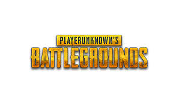

Pubg
It's the most-streamed game on Twitch. It's the No. 3 most-played game on Steam. It's sold 6 million copies in just four months, despite -- and this is  crazy -- being a buggy, unfinished Early Access game with a ridiculous name.
The other unusual thing about PUBG? Its creator, a 41-year-old Irishman named Brendan Greene, who taught himself to mod games. A former graphic designer and DJ, he's the man behind the name PlayerUnknown, and we published a huge interview with him today.
One of the more curious things about PlayerUnknown is how rarely he plays his own game.
He doesn't have a gaming computer at home -- only a laptop he uses for Netflix. In fact, he doesn't consider himself much of a gamer at all. "I've never played Zelda. I've never played these classic games because they don't interest me," Greene told me.
There's a met.
Terug